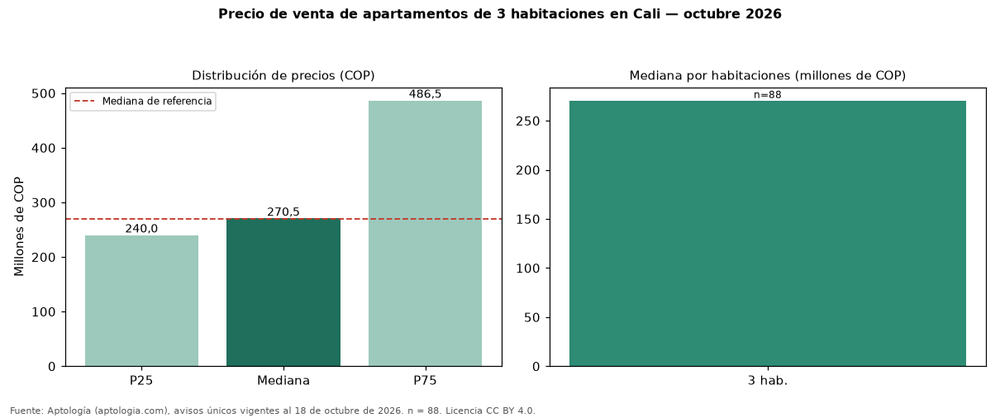

Precio de venta de apartamentos de 3 habitaciones en Cali — octubre 2026
COP 270 millones es la mediana de venta de apartamentos de 3 habitaciones en Cali, según 88 avisos únicos. Es prácticamente la misma mediana de apartamentos en Cali (COP 270 millones). Por metro cuadrado, la mediana es COP 4.191.228/m² (−1 % frente a COP 4.230.769/m²), puesto 3 de 11 ciudades comparables. En el mismo grupo: 1 habitación, COP 358 millones; 2 habitaciones, COP 249 millones; 4 o más habitaciones, COP 750 millones. El rango intercuartílico va de COP 240 millones a COP 486 millones (razón 2,0). El área mediana es 68 m² (referencia: 64 m²). El estrato más frecuente es 4. Datos abiertos CC BY 4.0 de Aptología; fuente y búsqueda de inmuebles: https://www.aptologia.com/venta/cali. Archivos: PDF de 2 páginas, CSV con las cifras y gráfica PNG.

| Avisos únicos | 88 |
|---|---|
| Percentil 25 | COP 240.000.000 |
| Mediana | COP 270.500.000 |
| Percentil 75 | COP 486.500.000 |
| Mediana por m² | COP 4.191.227 |
Fuente: avisos vigentes de portales inmobiliarios recopilados por Aptología, deduplicados (mínimo 30 avisos únicos por celda). Precios pedidos, no cerrados. Fecha: 2026-10-18.